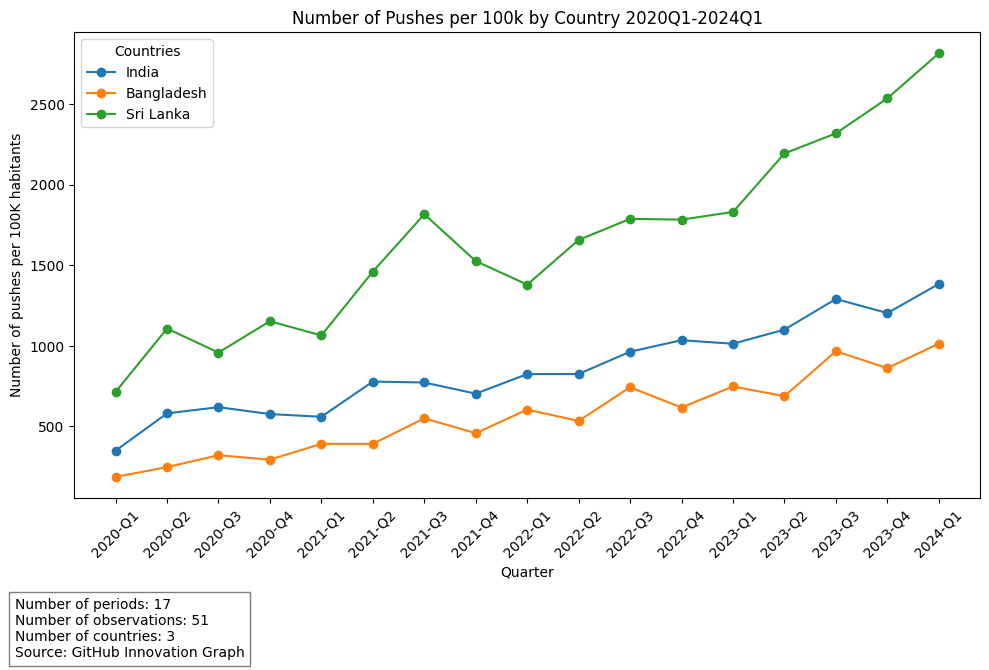
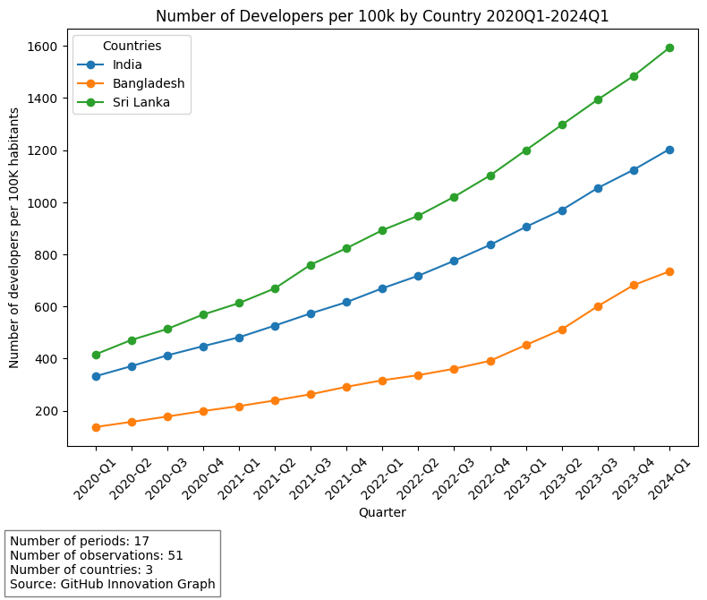
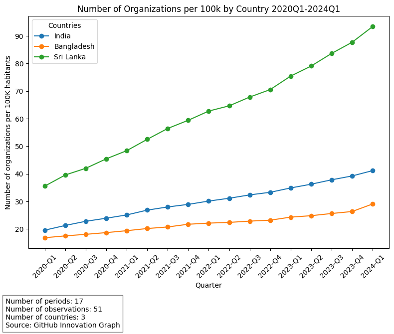

Technological Growth and Innovation Across South Asia: A Comparative Analysis of India, Bangladesh, and Sri Lanka (2020-2024)#
Number of Pushes per 100k by Country (2020Q1 - 2024Q1)#

Analysis#
This graph presents the number of Git pushes per 100,000 inhabitants by country (India, Bangladesh, and Sri Lanka) from Q1 2020 to Q1 2024. Key observations include:
Sri Lanka exhibits the highest activity in terms of Git pushes per capita, with a significant increase, reaching over 2,500 pushes per 100k inhabitants by Q1 2024. This shows a highly active developer community that consistently contributes to repositories.
India maintains steady growth, with Git pushes increasing from around 500 per 100k in 2020 to over 1,000 per 100k by 2024. This reflects India’s growing base of developers and continuous contributions to code repositories.
Bangladesh, while starting from a lower base, shows a gradual increase in pushes, reaching around 600 per 100k by Q1 2024. Although the growth is slower compared to the other two countries, it indicates a steady expansion in developer activity.
Key Observations:#
Sri Lanka clearly leads in terms of Git pushes per capita, which indicates that its developers are highly engaged in collaborative and open-source projects.
India shows a consistent upward trend, which aligns with the country’s broader role in the global software development industry, reflecting growing engagement from its developer population.
Bangladesh has a slower growth rate but shows steady progress, indicating that its tech ecosystem is gradually becoming more active.
Comparative Insights:#
Sri Lanka’s rapid rise in Git pushes per capita suggests a strong emphasis on open-source development and collaborative projects, making it a regional leader in software contributions.
India’s growth, though moderate, reflects the massive scale of its developer base and consistent contributions to both local and global projects.
Bangladesh shows slower growth but represents an emerging tech scene, where increasing contributions suggest a positive trajectory for the country’s software development activities.
Number of Repositories per 100k by Country (2020Q1 - 2024Q1)#

Analysis#
This graph shows the number of repositories per 100,000 inhabitants by country (India, Bangladesh, and Sri Lanka) from Q1 2020 to Q1 2024. The following key insights can be drawn from the data:
Sri Lanka leads in the number of repositories per 100k inhabitants, consistently staying ahead of both India and Bangladesh. By Q1 2024, Sri Lanka has exceeded 4,000 repositories per 100k inhabitants.
India shows steady growth, following closely behind Sri Lanka. India’s repository creation per capita has surpassed 2,500 by Q1 2024, indicating the country’s solid and growing developer base.
Bangladesh, while demonstrating growth, lags behind both Sri Lanka and India. By Q1 2024, Bangladesh reaches just over 1,000 repositories per 100k inhabitants.
Key Observations:#
Sri Lanka’s higher number of repositories per 100k inhabitants suggests a highly active and engaged developer community relative to its population size. This could be due to a thriving tech startup ecosystem and active government support for digital initiatives.
India shows substantial growth in repository creation, reflecting the country’s growing importance in the global software industry, though its per capita repository count remains lower than that of Sri Lanka.
Bangladesh’s lower repository creation rate indicates that while the tech industry is growing, it is still developing compared to its regional counterparts.
Comparative Insights:#
The data highlights Sri Lanka as an outlier in terms of repository creation per capita. Despite being smaller in population, Sri Lanka outpaces India and Bangladesh significantly.
India, with its much larger population, has a lower number of repositories per capita but still shows impressive growth, reflecting the scale of its developer ecosystem.
Bangladesh, although trailing in repository creation, is showing consistent progress, suggesting that the country’s software development sector is steadily maturing.
Number of Developers per 100k by Country (2020Q1 - 2024Q1)#

Analysis#
This graph displays the number of developers per 100,000 inhabitants by country (India, Bangladesh, and Sri Lanka) from Q1 2020 to Q1 2024. The key observations from the data include:
Sri Lanka consistently has the highest number of developers per 100k inhabitants, exceeding 1,500 developers by Q1 2024. This suggests a highly active and engaged developer community relative to the country’s population.
India shows steady and significant growth, reaching close to 1,000 developers per 100k inhabitants by Q1 2024. This reflects India’s large and rapidly growing developer base, even though the per capita numbers remain behind Sri Lanka.
Bangladesh, while showing slower growth than the other two countries, has increased its number of developers per capita from just over 200 per 100k inhabitants in 2020 to over 500 by 2024. This indicates a steady expansion of the tech industry and developer population in the country.
Key Observations:#
Sri Lanka’s high number of developers per capita emphasizes the country’s commitment to growing its software development sector and fostering technical skills.
India, while showing lower numbers per capita compared to Sri Lanka, has a massive and rapidly expanding developer population, which continues to grow at a steady pace.
Bangladesh shows promising growth, though it still lags behind both Sri Lanka and India in terms of the number of developers per 100k inhabitants. This could be attributed to its developing tech ecosystem.
Comparative Insights:#
Sri Lanka’s lead in developers per capita shows a robust focus on technology education and opportunities, despite its smaller population.
India’s steady rise highlights the country’s growing global influence in the tech industry, supported by a massive and diverse developer base.
Bangladesh’s growth, while slower, indicates the country is catching up, albeit at a different pace, likely due to its different economic and infrastructural context.
Number of Organizations per 100k by Country (2020Q1 - 2024Q1)#

Analysis#
This graph shows the number of organizations per 100,000 inhabitants by country (India, Bangladesh, and Sri Lanka) from Q1 2020 to Q1 2024. The key insights from the data include:
Sri Lanka shows the highest number of organizations per 100k inhabitants, with a steep growth from 30 in Q1 2020 to over 90 by Q1 2024. This indicates a highly active organizational base relative to its population size, likely reflecting a thriving startup ecosystem.
India shows steady growth, increasing from around 20 organizations per 100k in Q1 2020 to over 50 by Q1 2024. This growth reflects India’s large and expanding tech industry, with more organizations being established over time.
Bangladesh remains behind both Sri Lanka and India, but still shows growth, increasing from around 20 organizations per 100k to approximately 30 by Q1 2024. This suggests a more gradual growth of organizations in the tech sector compared to its regional counterparts.
Key Observations:#
Sri Lanka’s rapid growth in organizations per capita suggests a strong support system for new tech businesses and an entrepreneurial culture that encourages the creation of new organizations.
India’s steady growth is consistent with its position as a global tech hub, with more organizations being formed as its tech ecosystem expands, even if the per capita numbers remain lower than Sri Lanka.
Bangladesh shows slower but steady growth, reflecting the development of its tech sector. While it lags behind, the increase in the number of organizations is promising for the future of tech innovation in the country.
Comparative Insights:#
Sri Lanka continues to lead in terms of organizations per capita, suggesting a strong focus on fostering new businesses in the tech sector.
India’s numbers, though lower per capita than Sri Lanka, reflect its vast organizational landscape and continuous growth in tech-related industries.
Bangladesh’s slower pace of growth compared to the other two countries may be due to infrastructural or economic challenges, but the upward trend indicates ongoing development in its tech sector.